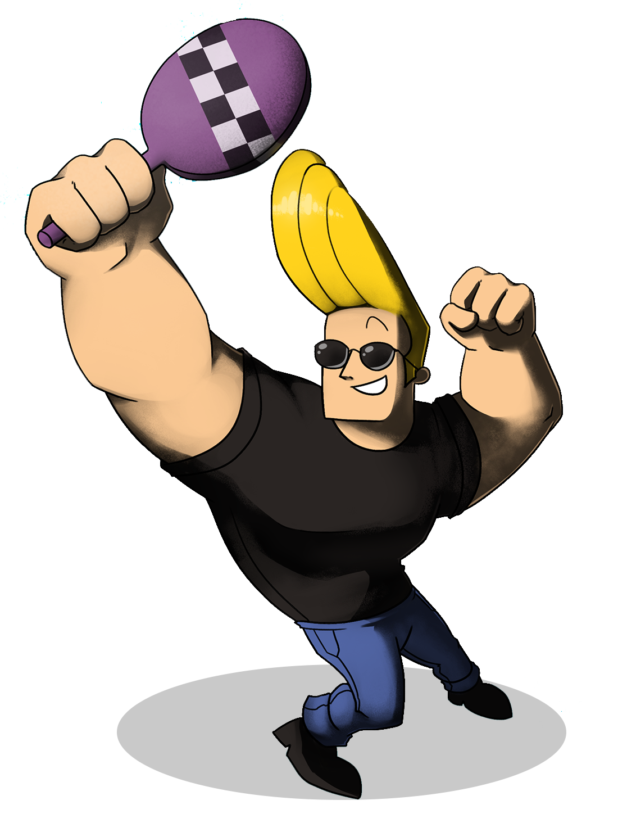

Hey Johnny Bravo hier!! Je moet me kennen van een
humoristische tekenfilmserie die werd vertoond op Cartoon Network.
Ik ben hier heel erg trots op! De tekenfilmserie ontstond halverwege
de jaren 1990 toen, ik nog een goddelijk lijf had.( die ik nu
gewoon nog steeds heb) De zender Cartoon Network
ging op zoek naar nieuwe tekenfilms die bij de smaak
van de kijker zouden aansluiten. Als onderdeel van het programma "What a
cartoon!" (ook bekend als "World Premiere Toons") werd een
aantal proefafleveringen uitgezonden, waarna de kijker
mocht bepalen welke uitzendingen zouden resulteren in een
tekenfilmserie. Ik behoorde tot de winnaars,
want alleen ik ben natuurlijk de beste YESS!,
evenals de tekenfilms Courage het bange hondje,
Cow and Chicken, Dexter's Lab en The Powerpuff
Girls. Maar hun zijn niet zo belangrijk als mij.
